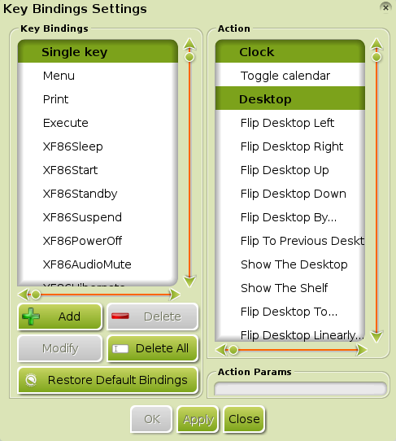
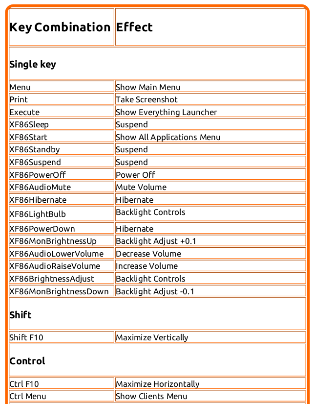
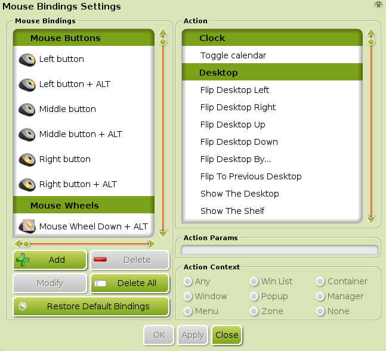
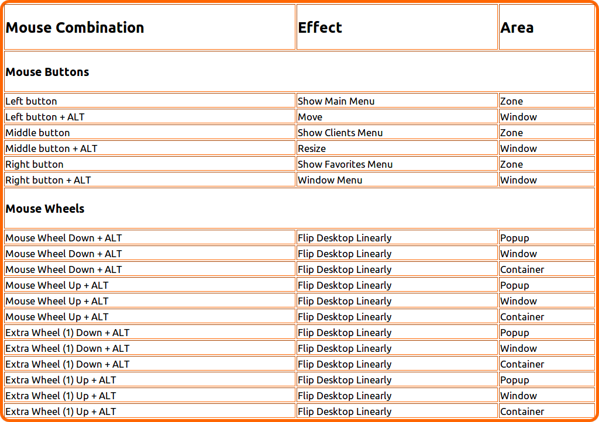
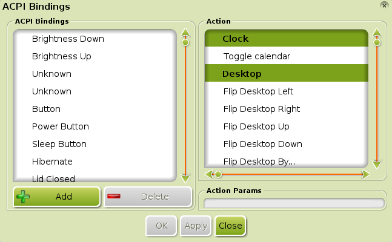
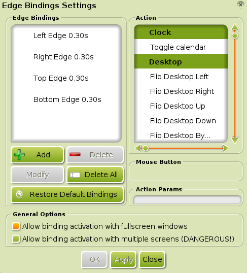

[kliknite na bilo koju sliku za uvećanje]
U Enlightenment (E17) žargonu, Vezovi (Bindings) se odnose na Prečice (Shortcuts) koje možete konfigurisati radi lakše navigacije i mnoštva akcija koristeći bilo tastaturu, miš, događaj, ili ivični unos. Možete čak konfigurisati bilo koji vez da pokrenete neki skript ili program.
Tipovi vezova koji su ovde opisani su:
- Taster Vezovi (Key Bindings)
- Unos preko tastature. - Miš Vezovi (Mouse Bindings)
- Unos preko miša i tastera za promenu. - ACPI Vezovi (ACPI Bindings)
- Unos preko događaja. - Ivični Vezovi (Edge Bindings)
- Unos preko ivica ekrana.
- Programiranje Vezova (Programming Bindings)
- Opšta uputstva za programiranje vezova.
Opšte informacije:
Svaki dijalog Veza ima neke zajedničke osnovne stvari. Postoje dve sekcije. Leva sekcija, Vezovi (Bindings), je lista kombinacija za unos koje su već dodeljene. Ovo vam omogućava da promenite vezove i dodate dostupne kombinacije tako da možete da im dodelite akciju. Desna sekcija, Akcija (Action), je lista svih mogućih akcija koje mogu biti dodeljene i okinute. Sekcija Vezova (Bindings) varira u zavisnosti od tipa vezivanja, dok sekcija Akcija (Action) ostaje nepromenjena za sva četiri tipa vezivanja.
Iz razloga što je proces modifikacije/kreiranja vezova tako sličan između četiri tipa, postoji sekcija koja je nezavisna od vezivanja o tome kako programirati vezove, a nalazi se na dnu stranice.
Taster Vezovi (Key Bindings)

{kind=link}
Taster Vezovi (Key Bindings) se mogu konfigurisati preko Main Menu>Settings>All>Input>Key Bindings, što otvara dijalog Podešavanja Taster Vezova (Key Bindings Settings) , prikazan na slici desno.
Mnogi tasteri su konfigurisani po standardu (default) (pogledati pod Standardni Taster Vezovi (Default Key Bindings) na dnu sekcije), ali, kao i ostali vezovi, možete promeniti akciju bilo kog tastera, i dodati novu kombinaciju tastera i akcija po potrebi.
Istraživanje Podešavanja Taster Vezova (Key Binding Settings)
Da dobili "osećaj" kako Podešavanja Taster Vezova (Key Binding Settings) rade, kliknite na neki od tastera iz kolone Taster Vezovi (Key Bindings) , i posmatrajte šta se događa u koloni Akcija (Action) sa desne strane.
Na primer, sa leve strane, pod Jedini Taster (Single Key),
postoji taster koji se zove Meni (Menu). Kliktanjem na taj Taster Vez (Key Binding),
će prouzrokovati da njegova konifugrisana akcija iskoči u pogled na desno, Prikaži Glavni Meni (Show Main Menu).
Napomena: Taster Meni (Menu) na većini tastatura ima simbol "Meni (Menu)" i nalazi se na dva ili tri tastera desno od tastera Space.
Ostali Jedini Tasteri (Single Keys) su izlistani ispod Menija (Menu). XF86* serija tastera postoji na mnogim tastaturama za kontrolu funkcija hardware-a kao što su jačina zvuka, osvetljenje ekrana i tako dalje. Kliknite na XF86 Mutiraj Audio (XF86AudioMute), na primer, i videćete da je on mapiran do akcije Mutiraj Jačinu (Mute Volume).
Ispod Jedinih Tastera (Single Keys), ostatak Taster Vezova (Key Bindings) je grupisan po kategorijama:
*Napomena: Bilo koja od gornjih kombinacija, sa izuzetkom "Win" tastera, ne moze biti programirana da sama proizvede akciju; moraju biti uparene sa još jednim tasterom. Takođe, taster "Win" je taster sa windows logom.
Kao što je rečeno u Opštim Informacijama,
sekcija sa leve strane prikazuje unos koji je već dodeljen. Kliktanjem na prikazanu taster kombinaciju će pokazati njegovu dodeljenu akciju. Na primer, pod kategorijom Promeni (Shift), kombinacija Promeni+F10 (Shift+F10)
je jedina Promeni (Shift) taster kombinacija koja je konfigurisana po standardu (default). Kliktanjem na Promeni+F10 (Shift+F10) u koloni sa leve strane će istaći akciju
Maksimiziraj Vertikalno (Maximize Vertically) u koloni sa desne strane. Ova akcija povećava veličinu prozora u fokusu do njegove maksimalne visine u vertikalnom pravcu.
Napomena: Postoji mnogo drugih mogućih taster kombinacija koje se mogu programirati sa tasterom Promeni(Shift) uključujući (ali nije ograničeno na): Promeni (Shift) + A do Z, 1 do 9, F1 do F9, F11, i F12.
Dostupne akcije su uslovljene time, koji Moduli su uključeni/učitani i grupisani su po kategorijama. Za razliku od kliktanja na taster kombinaciju, kliktanje na bilo koju Akciju (Action) neće prikazati da li je ona dodeljena. Slika dole prikazuje primer najčešće prikazanih kategorija:
*Napomena:
Ovo su samo kategorije za akcije. Možete konsultovati tabelu na dnu ove sekcije za standardne akcije koje su programirane u vašoj Bodhi Linux instalaciji.
Standardni Taster Vezovi (Default Key Bindings)

Važno: Ovo će takođe ukloniti sve dodatne Taster Vezove (Key Bindings) koje ste možda podesili.
Ako u bilo kom trenutku odlučite da ste napravili nered sa vašim
Taster Vezovima (Key Bindings) i želite da sve vratite na standardnu (default) konfiguraciju, samo otvorite dijalog Podešavanja Taster Vezova (Key Bindings Settings) i kliknite
Vrati na Standardne Vezove (Restore Default Bindings) na dnu. Kliknite OK ili
Primeni (Apply) da to snimite.
Slika sa desne straneiznad služi kao link prema stvarnoj i kompletnoj listi standardnih (default) Taster Vezova, kao i prikaz uzoraka standardnih (default) prečica za tastaturu za Bodhi Linux 2.2.0 i iznad. Da bi videli kompletnu, uvećanu sliku, kliknite na nju.
*Da se vratite na vrh stranice, kliknite, ovde.
Miš Vezovi (Mouse Bindings)

{kind=link}
Miš Vezovi (Mouse Bindings) se mogu konfigurisati preko Main Menu>Settings>All>Input>Mouse Bindings, što otvara dijalog Podešavanja Miš Vezova (Mouse Bindings Settings) koji je prikazan na slici levo.
Mnoštvo miš+taster kombinacija je konfigurisano po standardu (default) (pogledajte pod Standardni Miš Vezovi (Default Mouse Bindings) na dnu sekcije). Kao i drugi vezovi, možete promeniti bilo koju miš+taster kombinovanu akciju i dodati nove miš+taster kombinacije i akcije po potrebi.
Istraživanje Podešavanja Miš Vezova (Mouse Binding Settings)
Isto kao i u sekciji Taster Vezovi (Key Bindings) kliknite na neku od kolona Miš Vezovi (Mouse Bindings) i posmatrajte šta se dešava u koloni Akcija (Action) sa desne strane. Ovo je najbolji način da se upoznate sa tim.
Na primer, sa leve strane, pod Miš Dugmići (Mouse Buttons), postoji dugme koje se zove Levo Dugme (Left Button). Kliknite na taj Miš Vez (Mouse Binding), i njegova konfigurisana akcija će iskočiti u pogled na desnoj strani, Prikaži Glavni Meni (Show Main Menu). On obavlja istu akciju kao taster vez Meni (Menu) iz Taster Vezovi (Key Bindings) primera!
Ostali Miš Dugmići (Mouse Buttons) su izlistani ispod Levog Dugmeta (Left Button). Konvencinalni miš ima levo dugme, desno dugme, srednje dugme i točkić za gore/dole (skrol).
*Napomena: Za razliku od Podešavanja Taster Vezova (Key Bindings Settings),
Miš Vezovi (Mouse Bindings) su grupisani u samo dve kategorije.
Kao što je rečeno u Opštim Informacijama,
sekcija sa leve strane prikazuje unos koji je već dodeljen. Možete primetiti da već postoje neki miš dugmići koji su upareni sa tasterima. Tasteri koje možete koristiti za uparivanje sa mišom su ograničeni na ALT,
CTRL, WIN, i SHIFT tastere, koji se zajedno nazivaju tasteri za promenu.
Napomena: Obratite pažnju na sekciju Kontekst Akcija (Action Context).
Ovo određuje lokaciju gde će Vez morati da bude započet da bi njegova vezivna akcija bila aktivirana.
Dostupne akcije su uslovljene time, koji Moduli su uključeni/učitani i grupisani su po kategorijama. Kliktanje na bilo koju Akciju (Action) neće prikazati da li je ona dodeljena. Slika dole prikazuje primer najčešće prikazanih kategorija:
Standardni Miš Vezovi (Default Mouse Bindings)

Važno: Ovo će takođe ukloniti sve dodatne Miš Vezove (Mouse Bindings) koje ste možda podesili.
Ako u bilo kom trenutku odlučite da ste napravili nered sa vašim
Miš Vezovima (Mouse Bindings) i želite da sve vratite na standardnu (default) konfiguraciju, samo otvorite dijalog Podešavanja Miš Vezova (Mouse Binding Settings) i kliknite
Vrati na Standardne Vezove (Restore Default Bindings) na dnu. Kliknite OK ili
Primeni (Apply) da to snimite.
Slika sa desne straneiznad služi kao link prema stvarnoj i kompletnoj listi standardnih (default) Miš Vezova, kao i prikaz uzoraka standardnih (default) miš vezova za Bodhi Linux 2.2.0 i iznad. Da bi videli kompletnu, uvećanu sliku, kliknite na nju.
*Da se vratite na vrh stranice, kliknite ovde.
ACPI Vezovi (ACPI Bindings)

{kind=link}
ACPI Vezovi (ACPI Bindings) se mogu konfigurisati preko Main Menu>Settings>All>Input>ACPI Bindings, što otvara dijalog Podešavanja ACPI Vezova (ACPI Bindings Settings) prikazan na slici desno.
Nekoliko događaja je vezano po standardu(default) (pogledajte pod Standardni ACPI Vezovi (Default ACPI Bindings) na dnu sekcije). Kao i ostale vezove, možete promeniti bilo koju akciju ACPI Veza (ACPI Binding)i dodati nove ACPI Vezove (ACPI Bindings) i akcije po potrebi.
Istraživanje Podešavanja ACPI Vezova (ACPI Binding Settings)
Isto kao i u sekcijama Taster Vezovi (Key Bindings) & Miš Vezovi (Mouse Bindings) kliknite na neki od ACPI Vezova (ACPI bindings) u ACPI Vezovi (ACPI Bindings) i posmatrajte šta se dešava u koloni Akcija (Action) sa desne strane. Ovo je najbolji način da se upoznate sa tim.
Na primer, sa leve strane, pod ACPI Vezovi (ACPI Bindings), nalazi se događaj koji se zove Dugme za Napajanje (Power Button). Kliknite na taj ACPI Vez (ACPI Binding), i njegova konfigurisana akcija će iskočiti u pogled sa desne strane, Isključi Napajanje Sada (Power Off Now). Počeće proces isključivanja kompjutera u slučaju da dugme za napajanje bude pritisnuto.
Ostali ACPI Vezovi (ACPI Bindings) su izlistani oko Dugmeta za Napajanje (Power Button).
*Napomena: Za razliku od Podešavanja za Taster & Miš Vezove (Key & Mouse Bindings Settings),
ACPI Vezovi (ACPI Bindings) su grupisani samo u jednu kategoriju.
Kao što je rečeno u Opštim Informacijama, sekcija sa leve strane prikazuje unos koji je već dodeljen. Pomenuli smo ranije, kliktanjem na prikazan događaj veza, će prikazati njegovu dodeljenu akciju.
Dostupne akcije su uslovljene time, koji Moduli su uključeni/učitani i grupisani su po kategorijama. Kliktanje na bilo koju Akciju (Action) neće prikazati da li je ona dodeljena. Slika dole prikazuje primer najčešće prikazanih kategorija:
Standardni ACPI Vezovi (Default ACPI Bindings)
Podešavanja ACPI Vezova (ACPI Bindings Settings) nemaju dugme Vrati na Standardne Vezove (Restore Default Bindings). U svetlu ovoga, ako u bilo kom trenutku odlučite da ste napravili nered sa vašim
ACPI Vezovima (ACPI Bindings) i želite da sve vratite na standardnu (default) konfiguraciju, samo otvorite dijalog Podešavanja ACPI Vezova (ACPI Bindings Settings) i sa grafikona dole koji je naveden kao referenca, obrišite sve dodate ACPI Vezove (ACPI bindings) i propisno ponovo dodelite standardne(default) Akcije (Actions) za standradni(default) Unos (Input). Kliknite OK ili Primeni(Apply) da to snimite.
Grafikon na slici dole prikazuje standardne (default) ACPI Vezove (ACPI bindings) za Bodhi Linux 2.1.0 i iznad.
*Da se vratite na vrh stranice, kliknite, ovde.
Ivični Vezovi (Edge Bindings)

{kind=link}
Ivični Vezovi (Edge Bindings) se mogu konfigurisati preko Main Menu>Settings>All>Input>Edge Bindings, što otvara dijalog Podešavanja Ivičnih Vezova (Edge Bindings Settings) koji je prikazan na slici levo.
Nijedna ivica ekrana nije vezana po standardu(default). Kao i ostali vezovi, možete dodati bilo koji Ivični Vez (Edge Binding) koji želite. Moći ćete, naravno, da promenite bilo koji Ivični Vez (Edge Binding) i njegovu dodeljenu akciju po potrebi.
Istraživanje Podešavanja Ivičnih Vezova (Edge Binding Settings)
Isto kao i u sekcijama Taster Vezovi (Key Bindings), Miš Vezovi (Mouse Bindings), & ACPI Vezovi (ACPI Bindings) kliknite na neki od vezova u koloni Ivični Vezovi (Edge Bindings) i posmatrajte šta se dešava u koloni Akcija (Action) sa desne strane. Ovo je najbolji način da se upoznate sa tim.
Na primer, sa leve strane, pod Ivični Vezovi (Edge Bindings), se nalazi vez pod nazivom Leva Ivica 0.30s (Left Edge 0.30s). Kliknite na taj Ivični Vez (Edge Binding), i njegova konfigurisana akcija će iskočiti u pogled sa desne strane, Preokrenite Radnu Površinu u Pravcu... (Flip Desktop in Direction...). U ovom slučaju, taj pravac je levo.
Takođe obratite pažnju na Opšte Opcije (General Options). Postoji opcija koja dozvoljava da Ivični Vezovi (Edge Bindings) funkcionišu čak i kada su prozori u punom ekranu(fullscreen) (omogućeno po standardu(default)), i postoji druga opcija koja dozvoljava Ivične Vezove (Edge Bindings) na više ekrana(multiple screens) (trenutno eksperimentalna).
*Napomena: Slično kao i Podešavanja ACPI Vezova (ACPI Bindings Settings),
Ivični Vezovi (Edge Bindings) su grupisani u samo jednoj kategoriji.
Kao što je rečeno u Opštim Informacijama, sekcija sa leve strane prikazuje unos koji je već dodeljen. Obratite pažnju da postoje trajanja vremena u sekundama u svim Ivičnim Vezovima (Edge Bindings). Ovo je vreme koje je potrebno da se akcija izvrši, jednom kada kursor miša ili prozor ostvari kontakt sa tom konkretnom ivicom. Pomenuli smo ranije, kliktanjem na prikazani Ivični Vez (Edge Binding) će prikazati njegovu dodeljenu akciju.
Dostupne akcije su uslovljene time, koji Moduli su uključeni/učitani i grupisani su po kategorijama. Kliktanje na bilo koju Akciju (Action) neće prikazati da li je ona dodeljena. Slika dole prikazuje primer najčešće prikazanih kategorija:
Standardni Ivični Vezovi (Default Edge Bindings)
Važno: Ovo će takođe ukloniti sve dodatne Ivične Vezove (Edge Bindings) koje ste možda podesili.
Ako u bilo kom trenutku odlučite da ste napravili nered sa vašim
Ivičnim Vezovima (Edge Bindings) i želite da sve vratite na standardnu (default) konfiguraciju, samo otvorite dijalog Podešavanj Ivičnih Vezova (Edge Bindings Settings) i kliknite
Vrati na Standardne Vezove (Restore Default Bindings) na dnu. Kliknite OK ili
Primeni (Apply) da to snimite.
Grafikon na slici dole prikazuje standardne (default) ivične vezove (edge bindings) za Bodhi Linux 2.1.0 i iznad.
*Da se vratite na vrh stranice, kliknite ovde.
Programiranje Vezova (Programming Bindings)
Uopštavanje (Generalizations)
Proces izmene i kreiranja, za bilo koju vrstu Veza (Binding), je dovoljno jednostavan da ne zahteva specijalizovane primere za razumevanje procesa. Opšte predstavljanje će biti urađeno u vezi sa kreiranjem i izmenom novih vezova.
U skladu sa tim, proći ćemo nekoliko jednostavnih primera koji objašnjavaju kako dodati nove & izmeniti postojeće Taster Vezove (Key Bindings).
Dodavanje Veza (Adding a Binding)
Pretpostavimo da želite da programirate Alt+L, kombinaciju tastera koja nije vezana po standardu(default), da otvorite Leafpad.
U koloni sa leve strane, kliknite na Dodaj Vez (Add Binding). Iskočiće prozorčić koji će vam tražiti da unesete željeni taster redosled. Pritisnite tastere Alt+L zajedno. Ovo će napraviti vezu u sekciji Taster Vezovi (Key Bindings). Neka vam Taster Veza (Key Binding) koju ste upravo napravili bude selektovana jer sada morate da je dodelite Akciji (Action). Za ovaj primer, u koloni Akcije (Actions) upravljajte do i kliknite na Komandu (Command) u kategoriji Pokreni (Launch). Unesite
leafpadu sekciji Parametri Akcije (Action Params) na dnu kolone sa desne strane. Kliknite OK ili Primeni(Apply). Sada pritisnite Alt+L, i videćete da se program Leafpad otvorio.Promena Akcije za Vez (Changing the Action of a Binding)
Kao što je prikazano u tabeli ispod, kombinacija Ctrl+Alt+S je programirana po standardu(default) da menja Lepljivi Mod (Sticky Mode) pod kategorijom Prozor:Stanje (Window:State). Možda više volite da tu kombinaciju upotrebite da suspendujete kompjuter. Akcija Suspenduj (Suspend) se nalazi u kategoriji Sistem (System).
U koloni sa leve strane, klinite na Ctrl+Alt+S. U koloni sa desne strane kliknite na Suspenduj (Suspend) u kategoriji Sistem (System), zatim kliknite OK ili Primeni(Apply) na dnu. Sada pritisnite Ctrl+Alt+S, i prozorčić će iskočiti i pitati vas da li sada želite da suspendujete kompjuter. Kliknite Da (Yes) da suspendujete ili Ne (No) da otkažete.
Promena Unosa Veza (Modifying the Input of a Binding)
Pretpostavimo da vam se ne dopada da koristite Shift+F10 za akciju Vertikalno Maksimiziranje (Maximize Vertically) već bi da radije koristite Shift+0. Selektujte Shift+F10 u sekciji Taster Vezovi (Key Bindings) , zatim kliknite Promeni Vez (Modify Binding). Iskočiće vam prozorčić koji će vam tražiti da unese redosled tastera. Pritisnite Shift+0, zatim OK ili Primeni(Apply).
Napomena:Ako unesete već postojeći Taster Vez (Key Binding) dok koristite akciju Promeni Vez (Modify Binding), on neće promeniti vez. Umesto toga će skočiti do već postojećeg Taster Veza (Key Binding) u koloni sa leve strane.
Specijalizacija (Specializations)
Podešavanja ACPI Vezova (ACPI Bindings Settings) nemaju dugme Promeni (Modify).
- Da promenite:
Moraćete da uradite dve stvari, da obrišete vez koji koristi Unos (Input) koji bi želeli i promenite/obrišete vez koristeći Akciju (Action) koju želite da dodelite. Zatim možete da nastavite sa dodavanjem novog veza za njega.
*Da se vratite na vrh stranice, kliknite ovde.